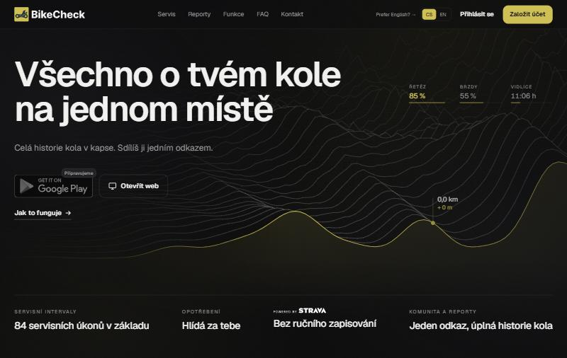
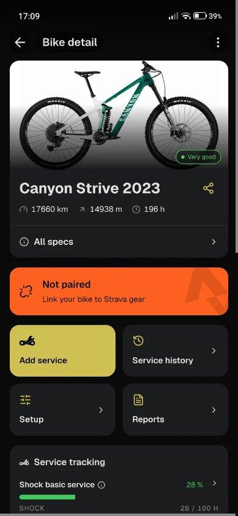
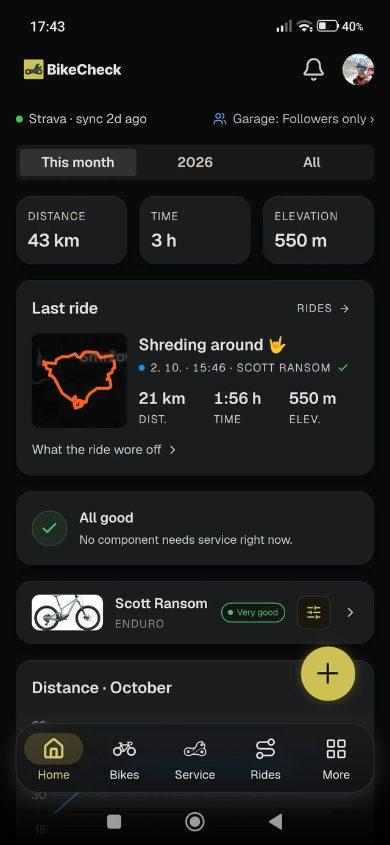

BikeCheck
Vše o Vašem kole na jednom místě. Aplikace pro cyklisty: kola, komponenty a servisní historie, nastavení kola, možnost generování servisních reportů, sdílení celého profilu veřejně nebo v rámci aplikace. Jízdy ze Stravy se samy započítávají do opotřebení dílů, a to nejen podle najetých kilometrů, ale i podle profilu trasy. Aplikace opotřebení hlídá za Vás. V základu je 84 servisních úkonů, takže zadání nového servisu je otázkou několika kliknutí. Součástí je AI asistent, který zná uživatelova kola, jejich komponenty i servisní historii – díky tomu dokáže poradit přesně na míru konkrétnímu vybavení.
- Backend v NestJS (TypeScript), Prisma a PostgreSQL – REST API
- Frontend pro desktop i mobil v Reactu, Android přes Capacitor na Google Play, CI/CD v GitHub Actions
- Mikroslužba pro Strava OAuth a webhooky
- AI asistent s function callingem nad daty uživatele a RAG nad servisními manuály
- V produkci s prvními uživateli
NestJS · PostgreSQL · Prisma · Redis · BullMQ · React · Capacitor · Agents AI SDK · RAG


